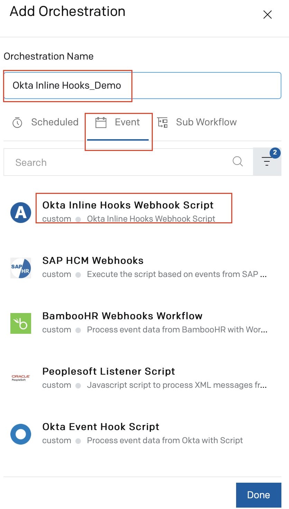
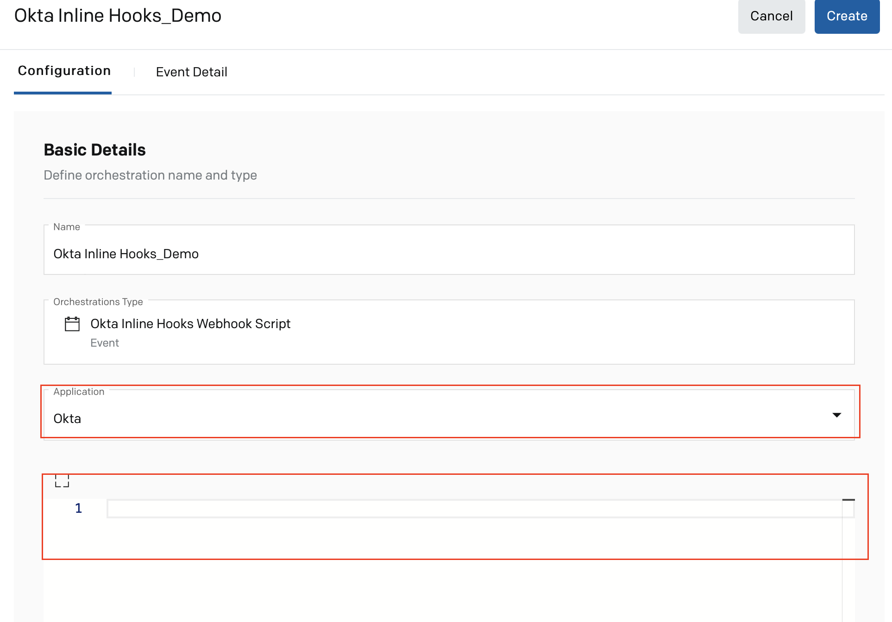
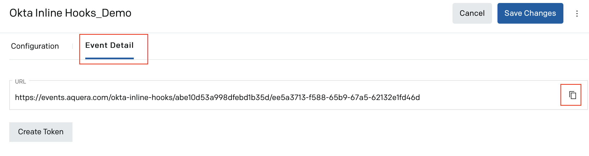
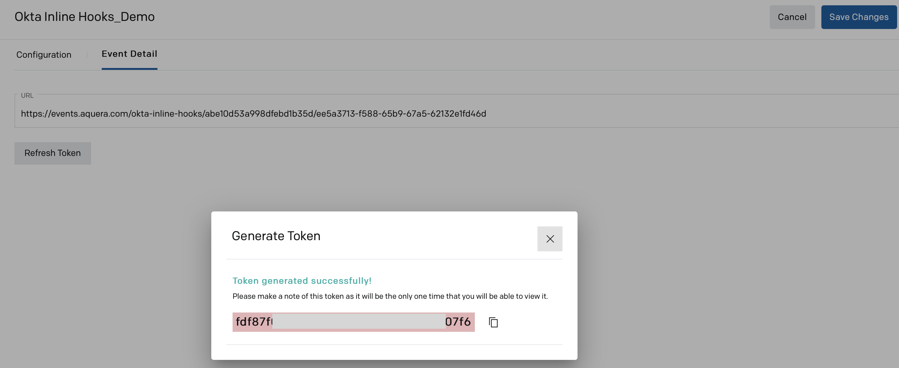
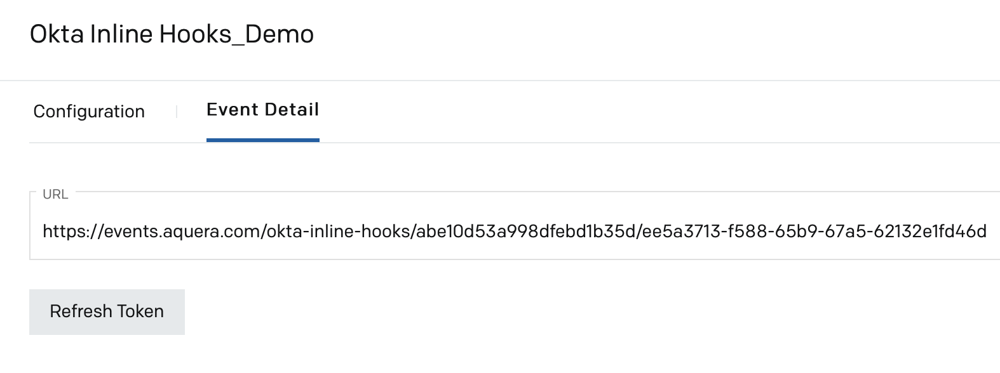
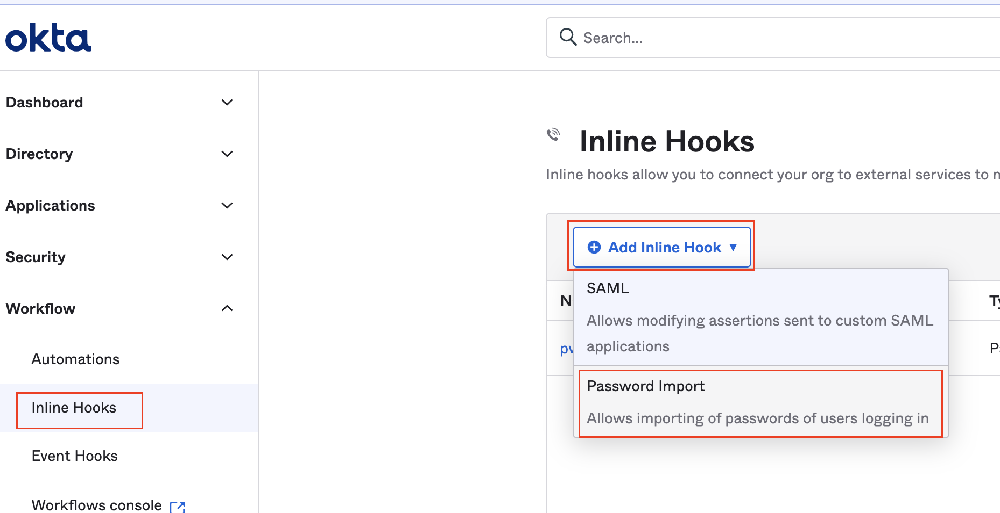
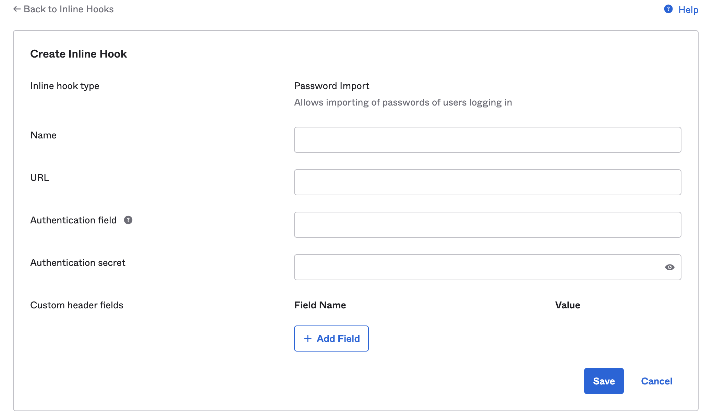
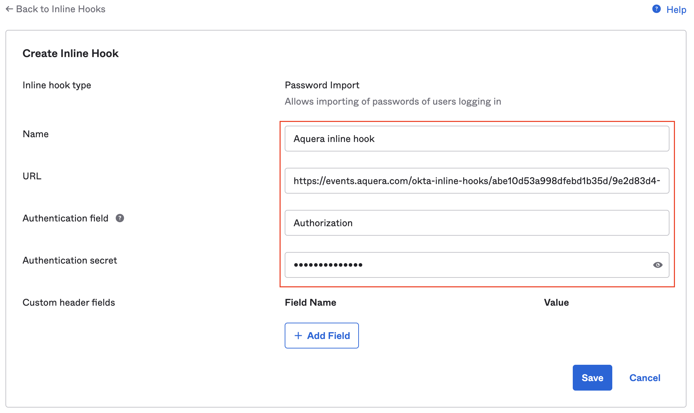

Okta Inline hooks are calls made from Okta, triggered at specific points in Okta process flows, to a custom code. These inline hooks allow you to integrate custom functionality into those flows.
Unlike Event hooks, Inline hooks are synchronous, that is, after sending the call, the Okta process flow waits for a response from the called service.Okta provides different types of Inline hooks. Currently, Aquera orchestration supports only Password Import Inline Hook from Okta.
The Password Import Inline Hook allows Okta to verify the user’s password against the user profile system before determining whether to grant access and migrate the user password.
This guide explains the setup for integrating the password import inline hook in Okta with Aquera's Okta Inline hooks script orchestration. The setup involves the following procedures:
The Okta Inline Hooks script orchestration must be first set up in Aquera Admin console. When you set up this orchestration, you must enter the script to validate the user's password in the user profile system. After the verification of the user password, a response is sent back to Okta indicating whether the password is successfully verified or not.


const cred = JSON.stringify(event && event.data && event.data.context && event.data.context.credential);
log.info(cred);
cred.username //gives the username in the Okta request
cred.password //gives the password in the Okta request
Your script must also include the following code to specify whether the password verification is successful or not. An appropriate response is sent to Okta based on the verification result.
customScriptResult = true; //password verified
customScriptResult = false; //wrong password provided

This URL will have to be copied and configured as the inline hook endpoint when you create the Inline Hook in Okta. For details, refer to the Setting up Inline Hooks in Okta section.


In case you have lost the generated token, you can click Refresh Token to generate a new token. Then, this new token will have to be configured in Okta.
This procedure explains how you can set up a password import inline hook in Okta. This inline hook verifies a user-supplied password. The username and password will be sent as part of the request to Aquera's Okta inline hook orchestration.


| Field | Description |
| Name | Enter a name for the inline hook. |
| URL | Copy the URL from the Event Detail tab of the Okta Inline Hook Script orchestration in Aquera Admin console and paste it here. Refer to the Setting Up Okta Inline Hooks Script Orchestration in Aquera section for details. |
| Authentication field |
Enter Authorization, which is the name of the authorization header. Note: Okta Inline Hooks use header-based authentication. |
| Authentication secret |
Enter the keyword, bearer, followed by a space and the token generated in Aquera Admin console. The format of the value to be entered in this field is, bearer <copiedtoken>. You must copy the token that was generated for the Okta Inline Hook Script orchestration in Aquera Admin console and paste it here. Refer to the Setting Up Okta Inline Hook Orchestration in Aquera section for details. |
| Custom header fields |
Optional field name / value pairs to be sent with the request to Aquera's Okta inline hook orchestration. |

When the user password is successfully validated with the user profile system, a response is sent back to Okta as Verified. Else, the response is sent to Okta as Unverified.
|
NOTE: |
|
|
|
By default, Okta expects a response for the inline hook request within 3 seconds after which a time-out occurs. If you want to increase the response time to handle varying processing times, you must send a request to the Okta support team to increase the inline hook request time-out to 10 seconds. |